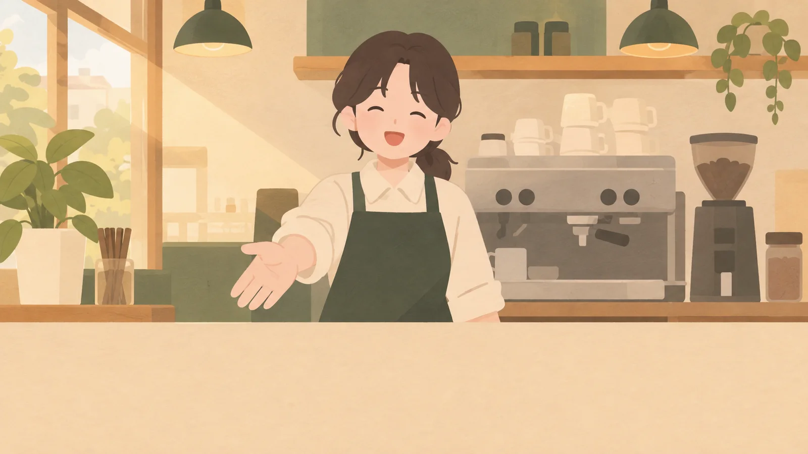

나를 기억하는 상대

어제 한 말을 기억하고 오늘 이어서 물어요. 단골 카페 점원처럼요.

어… 하고 막힌 그 말이 다음 날 내 교재가 되는 영어 말하기 프로그램이에요.
하루 10분 · 0원 · 내 대화 또는 일상 상황
듀오링고는 반복만 시켰고
말해보카는 왜 하는지 몰랐다.
그래서 둘 다 끊었다.
남긴 건 영상통화와
정확한 발음, 이 둘.
둘 다 결제해서 써 봤어요. 반복은 진전이 안 느껴졌고, 발음은 좋았지만 계속할 이유가 없었어요.
먼저 매듭 하나를 풀어요. 8~9문제, 하트 없이.
그다음 AI 상대와 말해요. 지난번 얘기를 기억해요.
끝나면 멈춘 곳마다 지어진 매듭에서 꼬인 말을 뽑아요.
다음 날 꼬인 말을 풀고, 대화에서 두 번 쓰면 끝.
열면 한 가닥 실이 화면을 따라 흐르고, 그 위에 매듭이 엉켜 있어요. 매듭 하나가 레슨 하나예요. 맞힐수록 위쪽 매듭이 풀리고, 다 풀면 실이 곧게 펴지며 구슬이 꿰여요. 한 타래를 다 풀면 그 실로 맺은 매듭 장식을 얻어요.
말 걸기에서는 내 목소리가 실을 그려요. 1.2초 넘게 멈추면 그 자리에 매듭이 지어지고, 그게 꼬인 말이 돼요. 말하기·듣기가 어려운 곳에선 '지금 말할 수 없어요'를 누르면 1시간 빠져요. 옆 화면은 눌러서 풀어 볼 수 있는 예시예요.
술술 열기 →영어로 사는 하루를 장면마다 오른쪽으로 걸어가요. 보기 고르기 대신 뜻만 보고 내가 직접 말해요.


숫자를 모으는 걸로는 계속 오지 않았어요. 사람, 소리, 바깥, 내 이야기로 붙잡아요.
어제 한 말을 기억하고 오늘 이어서 물어요. 단골 카페 점원처럼요.
매주 같은 질문에 다시 답해요. 주황 구멍이 줄어드는 게 보이고 들려요.

4주마다 진짜 사람 앞에서. 영어로 주문, 길 안내, 3분 발표 녹화.

한 달 동안 말한 문장이 내 이야기 한 권이 돼요. 내 목소리로 다시 들어요.
영어로 사는 이틀이에요. 장면마다 그 장소 그림 위에서 말해요. '내 이야기로'를 고르면 저녁마다 친구에게 오늘 일을 말하는 장면이 붙어요.
넣으면 장면이 맞춰지는 칸 부를 이름하는 일관심사영어 쓸 곳지금 수준 모두 비워도 돼요.
보기 고르기와 조각 맞추기는 '알아보기'만 시켜요. 말하기는 내가 스스로 꺼내 말할 때 늘어요. 그래서 장면 속에서 하고 싶은 말만 한국어로 보고, 직접 말하게 했어요.
같은 문장을 바로 여러 번 시키지 않아요. 막힌 말만 다음 날 다른 장면에서 한 번 더 나와요.
그림은 그림 AI로 만들어요. 장면마다 ChatGPT와 Gemini에 한 장씩 그려 보고 더 맞는 쪽을 써요. 카페는 Gemini의 납작한 그림을 골랐고, 나머지 장면도 이 그림체에 맞춰요.
모두 0원이에요. 말은 크롬 음성 인식으로 글로 바꾸고, 대답은 Gemini Flash-Lite 무료 등급, 소리는 브라우저 음성이 맡아요. 쓰는 사람이 자기 무료 키를 넣고, 키는 그 기기에만 저장돼요.
걸리는 점: Gemini 무료 등급은 대화가 구글 학습에 쓰여요. 그래서 키 넣는 화면에 알려 둬요.
장면 속 단어 중 헷갈리는 발음(receipt의 p처럼)은 누르면 바로 팁이 나와요. 소리 하나하나를 짚는 채점은 브라우저 안에서 도는 음소 인식 모델로 다음에 붙여요.